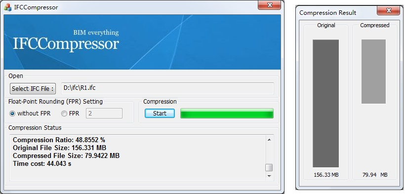

IFCCompressor
Software Requirement
Platform: Windows XP/Vista/7/8
Dependent runtime: Visual C++ Redistributable Packages for Visual Studio 2013 is required
Version: 1.0.0 (32 bit is availiable)
Download
Download IFCCompressor Source Code...
Download IFCCompressor (Commandline version) (x86)...
Download IFCCompressor (Commandline version) (x64)...
Download IFCCompressor User Tutorial...
Download IFC Model Sample Packages...

Recommended IFC Model Viewer
Recommended IFC Model Viewer
The recommended IFC Model Viewer is shown as blow, you can use them to view your original or compressed IFC file mode: